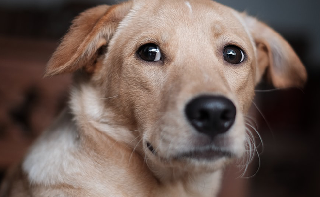
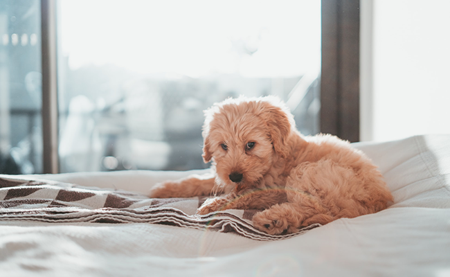

Available Dogs
-

Angela
A respectable lady who knows how to look her best. Has a calm demeanor, loves to observe. 3 year old Greyhound with no current health issues, good with kids and elderly.
Put in an application -
Bravo
A pup who knows how to run hot and cold. Wildly energetic and loves to play, but is also content with snuggling up and calling it a lazy day. 1.5 year old French Bulldog, requires weekly medication. Good with older kids.
Put in an application -

Milo
The class clown, Milo can cheer anyone up with his silly attitude and upbeat personality. 5 year old Labrador/unknown mix, requires checkup every 2 months for healing injury. Shy at first meeting, good with young kids.
Put in an application -

Charlie
A sweet pup always willing to help, and see what you're up to. 6 years old, thought to be a Bison Frise mix, but still unknown. Very shy when first meeting, with a calm and happy demeanor. No health issues, gets nervous around children.
Put in an application